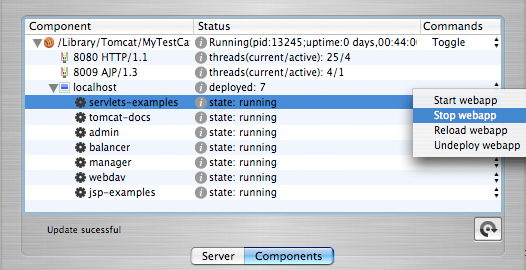

The "Components" View Display
To display the "Components" view for a Tomcat instance, select the instance you wish to manage from the dropdown menu in the controller window and click the "Components" tab for that instance, or click "View" in the main menu and select "Components".
The outline view displayed inside the "Components" tab represents a hierarchy of components for a particular Tomcat instance. The root element is the Tomcat server itself. Its connectors (code that listens on a particular port for requests) and hosts (the default is "localhost") are represented as its direct children. Each deployed application is displayed as a child of its parent host. Actions that can be taken on a component are displayed in a popup menu in the "Commands" column.

Just the root element (this Tomcat) is present until CatSlapper has communicated with this particular Tomcat Manager application instance at least once.